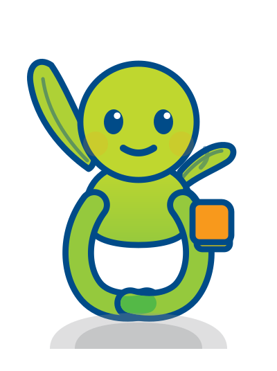

한국사회복지행정연구회 공식 캐릭터
아직 자라는 중인데, 이미 자기 떡잎으로 남을 덮어주고 있는 새싹.
품(가슴으로 감싸 안은 자리) + 싹(새싹). 한사연 CI가 가진 두 가지 의미 — 감싸 안음과 성장 — 을 한 조형에 그대로 받았습니다.
“당신이 매일 덮어준 만큼,
오늘은 당신이 덮일 차례입니다.”
요소별 가치 매핑
항목을 누르면 캐릭터에서 해당 위치를 표시합니다.

변경 금지
표정·자세·소품은 승인 절차를 거쳐 바꿀 수 있습니다. 아래 셋은 담당자 판단으로 바꿀 수 없고, 재심의 사항입니다.
3장 이상이면 CI의 ‘두 인물’ 대응 구조가 사라집니다. 좌우를 대칭으로 맞추면 “남 덮는 잎 / 나 덮는 잎” 설정이 소멸합니다.
팔을 떼어 품을 열면 CI 요람 곡선이 사라집니다. 품은 비워 두어 배경이 비치게 합니다.
#54B947이 색이 없으면 CI와 무관한 새싹 그림이 됩니다. AI·EPS로 변환할 때 마스크가 손실되면 색이 사라지므로 변환 후 반드시 육안 확인합니다.
프로필
말투
해요체로 짧게 끊고, 도입구는 “오늘은요,”로 고정합니다. 지시하지 않고 옆에 섭니다. “최고예요!”, “파이팅!”은 쓰지 않습니다.
공지 도입부
오늘은요, 꼭 보셨으면 하는 안내가 하나 있어요. 길지 않아요.
고된 날
잘한 날이 아니어도 괜찮아요. 오늘은 버틴 날이에요. 그것도 하나예요.
신규 임용자 환영
처음이라 땅이 단단하죠. 저도 오래 안 텄어요. 늦게 트는 게 잘못 트는 건 아니에요.
퇴직 회원 예우
당신이 먼저 덮어줘서 지금 이 화단이 있어요. 이제는 그늘에 앉아 계세요. 제가 서 있을게요.
원본 파일
회원과 17개 시·도 지회는 신청 없이 자유롭게 사용합니다. 한 파일을 축소해서 쓰지 않습니다 — 외곽선이 같이 얇아져 사라집니다. 축소될수록 선이 굵어지도록 사이즈별로 따로 그렸습니다.
최소 크기와 여백
| 매체 | 최소 크기 | 사용 파일 |
|---|---|---|
| 화면 (웹·앱·PPT) | 가로 16px | poomsak-16.svg |
| 화면 일반 사용 | 가로 48px 이상 권장 | poomsak-48.svg |
| 인쇄 | 가로 15mm | poomsak-48.svg 조형 |
| 인쇄 일반 사용 | 가로 25mm 이상 권장 | poomsak-main.svg |
| 자수 (모자·점퍼) | 가로 30mm 이상 | 단색 치환본 |
| 각인 (금속·아크릴) | 가로 20mm 이상 | 단색 치환본 |
사방 여백은 표시 높이의 1/6 이상을 비웁니다. 그 안에는 로고·글자·사진·테두리 무엇도 들어가지 않습니다. 16px 미만, 인쇄 15mm 미만에서는 캐릭터를 쓰지 않고 CI 심볼만 씁니다.
금지 사례
#54B947 생략17개 시·도 지회
지회마다 캐릭터를 따로 만들면 정체성이 흩어집니다. 공식 파일 그대로 쓰고, 아래나 옆에 「한사연 ○○○지회」 글자만 붙입니다.
| 구분 | 지회 자율 | 사무처 승인 |
|---|---|---|
| 공식 4종 파일 그대로 사용 | ○ | — |
| 명판 병기 | ○ | — |
| 지회 행사 현수막·안내물 | ○ | — |
| 비판매 굿즈 소량 제작 (100개 이하) | ○ (사후 보고) | — |
| 표정·자세 변주, 소품 추가 | ✕ | 필요 |
| 판매용 굿즈 제작 | ✕ | 필요 |
| 지회 전용 캐릭터 신규 개발 | ✕ 전면 금지 | |
명판은 네이비 #004B88 단색, 캐릭터 폭의 1.2배 이내, 여백 바깥에 둡니다. 지역 모티프는 캐릭터가 아니라 배경·소품 일러스트로 처리합니다.
확인 중인 사항
Pantone·CMYK 지정값은 미확정입니다. 이 페이지의 HEX 값은 공식 심볼 PNG를 픽셀 샘플링해 얻은 디지털 기준값입니다. 인쇄 발주 전에 색상 교정을 거쳐야 합니다.
「품싹」 상표는 아직 출원 전입니다. 중복 조사는 웹 공개정보 기준 1차 스크리닝이며, KIPRIS 정식 선행조사가 선행되어야 합니다.
생일 4월 11일은 제안값입니다. 조직 창립일과 1987년 최초 임용 월·일 공식 자료를 확인한 뒤 확정합니다.
본 페이지는 조직 의결 전 단계의 시안입니다. 채택·예산·회칙 반영은 대의원총회 의결 사항입니다.
품싹 외의 대안 5종도 검토되었습니다. 타 기관 캐릭터를 레퍼런스로 삼은 조형 5안과 한사연 테마색 채색안을 나란히 비교한 자료가 별도로 있습니다. → 캐릭터 5안 비교 보기